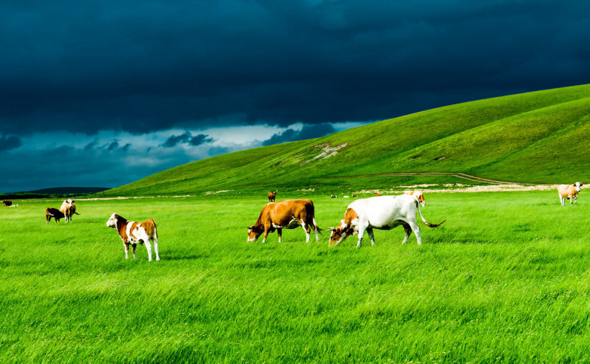
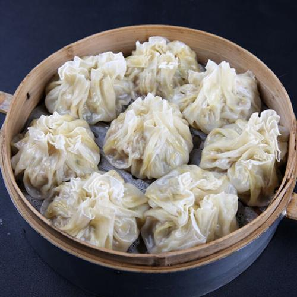

欢迎欣赏内蒙风光！
风景篇
| 1、响沙湾 AAAAA |

|
|
响沙湾于1984年1月被开辟为旅游景点，1991年被国家旅游局列为国线景点，1999年转为民营股份制企业，2002年被国家旅游局评定为国家4A级旅游景区，更值得骄傲的是，2011年1月响沙湾被评为国家5A级旅游景区，是集观光与休闲度假为一体的综合型的沙漠休闲景区。
中国沙漠休闲度假地——响沙湾是集观光与休闲度假为一体的综合型的沙漠休闲景区，地处中国著名的库布其沙漠最东端，是中国境内距离内地及北京非常近的沙漠旅游胜地，是国家AAAAA级旅游景区，国家文化产业示范基地。
在这个沙的世界里，隐现着似超现实却又现实的世外桃源——莲沙度假岛——福沙度假岛——一粒沙度假村——悦沙休闲岛——仙沙休闲岛。
|
| 2、呼伦贝尔大草原 AAAA |
|  |
|
呼伦贝尔草原位于内蒙古自治区东北部，地处大兴安岭以西的呼伦贝尔高原上，因呼伦湖、贝尔湖而得名。 整体地势东高西低，海拔在650～700米之间，东西宽约350千米，南北长约300千米，总面积1126.67万公顷（一亿四千九百万亩），其中可利用草场面积833.33万公顷。呼伦贝尔草原是世界著名的天然牧场，是世界四大草原之一，被称为世界上最好的草原，是全国旅游二十胜景之一。
呼伦贝尔草原是众多古代文明、游牧民族的发祥地，东胡、匈奴、鲜卑、室韦、回纥、突厥、契丹、女真、蒙古等民族曾繁衍生息于此，被史学界誉为“中国北方游牧民族摇篮”，在世界史上占据较高地位。 |
| 3、阿拉善盟额济纳胡杨林 AAAAA |
|
额济纳旗位于内蒙古自治区阿拉善盟，额济纳旗现有胡杨林38万亩，是全球仅存的三大林区之一。每年9、10月份，秋天是胡杨林最美的季节，秋天赶走了夏日的炎热，秋风吹走了生命的迹象，当第一场秋霜如期而至，大多数的植物在秋霜的攻击下低下了头颅、弯下了腰身，胡杨林却在秋天将积攒了一年的美丽全数绽放。
额济纳旗胡杨林，是属于，最古老的胡杨树，全部都是野生的，有很多老树，据说至少有几百年或者上千年的历史，也有一些老树，已经完成了他们的具有生机使命，开始下一个3000年的不倒使命，最后还有3000年的不朽，这就是胡杨林，沙漠中的绿洲，带给这个世界神奇的一面，胡杨林非常漂亮，不能用语言来形容，因为很多美妙，他都是具有灵性的，希望每一位朋友都能够自己亲自去感受一番。 |
美食篇
| 1、烤羊腿 推荐指数：★★★★★ |
|
烤羊腿是呼伦贝尔招待宾客的一道佳肴名菜。烤羊腿是从烤全羊演变而来。相传，生活在中国北方广阔大地上的狩猎和游牧的民族，常在篝火旁烘烤整只的猎物和整羊进食。人们逐渐发现整羊最好吃的部位是羊后腿，便经常割下羊后腿烘烤。单独烘烤的羊后腿不但比烤整羊时间快，而且更加味道鲜美，食用方便，烤羊腿遂逐渐代替了烤整羊。经过长期的发展，在羊腿烘烤过程中逐步增加了各种配料和调味品，使其形、色、味、鲜集一体，色美、肉香、外焦、内嫩、干酥不腻，被人们赞为“眼未见其物，香味已扑鼻”。
|
| 2、烧卖 推荐指数：★★★★ |
|  |
|
烧麦是呼和浩特的一种流传很久、至今不衰的传统风味食品。早在清朝时，当地的烧麦就已名扬京城了。当时，北京前门一带，烧麦馆的门前悬挂的招牌上，往往标有“归化城稍美”字样。外地客人来到呼和浩特，都要品尝一下烧麦，才算不虚此行。烧麦制作工艺独特，选料精良，皮子精而薄、羊肉馅肥瘦适中，葱姜等佐料齐全。烧麦出笼，鲜香四溢。观其形，只见皮薄蝉翼，晶莹透明，用筷提起垂垂如细囊，置于盘中团团如小饼。吃起来香而不腻。可谓食中美餐，形美而味浓。呼和浩特的稍美，过去专作早点之用，多由茶馆经营，如今，已成了许多饭馆的必备食品和家庭中的常用美餐了。
|
| 3、手把肉 推荐指数：★★★★★ |
|
手把肉是呼伦贝尔草原蒙古、鄂温克、达斡尔、鄂伦春等游牧、狩猎民族千百年来的传统食 品。即用手把着吃肉之意。羊、牛、马、骆驼等牲畜及野兽的肉均可烹制手把肉，但通 常所讲的手把肉多指手把羊肉而言。手把肉是草原牧民最常用和最喜欢的餐食，也是他们招待客人必不可少的食品。常年似乎已形成这样一种概念，即到草原观光旅游不吃一顿手把肉就算没完全领略到草原食俗风味和情趣 ，虚此一行。
|